何以解忧，唯有双胞胎妈妈群何以解忧，唯有双胞胎妈妈群
【帮主】圆圈妈妈：
这是孖仔帮双胎专栏【孖妈来了】的第六篇文章，来自双胞胎圆圆圈圈妈妈的投稿。
是啦！就是那个经常说自己文思如尿崩，老是躲厕所码字的圆圈妈妈！
【孖妈来了】是一个孖仔帮公众号创建的双胎专栏，专门接收双胞胎家庭的来稿，分享双胞胎爸爸妈妈与孩子们的成长故事，圆圈妈妈是发起人，自然是少不了她的故事哈！
双胞胎圆圆圈圈妈妈@圆圈妈：
我是单绒双羊双胞胎妈妈，孕35周＋5剖腹产，卸货一对男宝宝，5.2斤/5.3斤。
这对男宝宝就是公号文章中经常被提到的男主角，圆圆&圈圈！
关于我和他们哥俩的故事已经说得好多了，这篇文章是要跟大家分享我和双胞胎社群的故事，也是我成为一个双胞胎妈妈后的成长故事！
建群之初
1年半前，当我说我要建一个双胞胎妈妈群的时候，队友的反应有点诡异。
他的意思是，像我这样闷骚又不喜欢群聊的中年少妇建妈妈群，与让和尚去推销梳子没有本质区别！
可是我还是把社群建起来了！
刚开始群成员很少，很冷清，有人提问没人回答，超级尴尬！
为此，我经常去百度贴吧发小广告招人入群，还因此被封号。
甚至半夜三更去其他妈妈群里“偷人”，大致剧情就是：“群里有双胞胎吗？我这有双胞胎妈妈群哦，要不要加入啊！？”
总之，把自己搞的跟微商一样，人见人嫌！
随着公众号阅读量增加，粉丝人数不断增大，当初只有23人的妈妈群，很快就满500人，记得当时我还特地在群里发红包庆祝群成员突破500人大关。
接着开了群2，还不够，开了群3，依然不够，继续开，于是就有了现在的13个群，根据不同讨论主题细分了不同的群。
建群后的收获
感谢姑娘们的支持与信任！
我喜欢称呼怀上双胞胎的女人为姑娘们，我认为，即便有了双胞胎，我们的内心依然是那个满脸胶原蛋白人见人爱花见花开的18岁少女！
一个人管理13个社群，压力不小，即便后面有管理员宝爸宝妈们志愿维护群秩序，我依然觉得社群还有待提高，还能继续发挥更大的作用。
值得欣慰的是，大多数群友们都能遵守群规，自觉维护群秩序，让人省心不少！
每当有群友说这是个高质量的社群时，甭提有多自豪了！
真的非常感谢你们，没有你们的支持，我一人管这么多社群，我一定坚持不到现在！
每次拉你们入群，总会收获到一句“谢谢”，我坐在电脑桌旁，会不自觉地扬起嘴角微笑，心里暖暖的！原来“助人为乐”一词，不是玩虚的！
港真，我还是觉得说谢谢的人是我，有幸认识到同样是双胞胎父母的你们，尤其是你们学霸级别的育儿理念真让我这种“九品铲屎官”醍醐灌顶，大写的ORZ！
与大神们切磋双胞胎育儿经，胜读十年书，特别是在教育孩子的经验上，感触良多，受益不浅！
天知道，在这样一个人心比病毒还要可怕的大时代，养大一对双胞胎有多艰难！
这里的养大不是指养到18岁，而是终于把他们培养成为一个生存能力极其顽强的社会人！
比如，他们必须善良，正直，坚韧，智慧，敢讲真话的同时还能保护好自己，不至于丢掉性命！
然后我们为人父母手上都没有这样一根魔法棒，手一挥，孩儿们就马上长大了！
双胞胎孩子们在特殊环境下的成长亟需为人父母的我们集思广益，博采众长，抱团取暖，寻求适合自己家庭的育儿经。
同时，还要非常感谢管理员宝爸宝妈牺牲带娃时间，维护群秩序，比如热心帮群友P新生儿照片，分享双胞胎睡眠圣经的深圳宝爸，24小时全天候在群里解答新手妈妈的疑难问题的小女警妈妈，她给妈妈们代购的飞鹤奶粉全网独家最优惠（如有需要可私信她Chen-fenxiangyouhui）
非常欢迎更多宝爸宝妈加入到管理员行列，为社群提供更好的服务！
还社群一片净土
当然，总免不得别有用心的人潜入到群里发小广告。
我想说的是，双胞胎育儿专属交流群是我的第三个孩子，是我和众多双胞胎家长们共同成长的净土，我不允许别人玷污她！
但凡有人在群里发广告，不遵守群规，我都不能容忍！
你知道吗，你发个广告链接在群里，只需要一个复制粘贴，而我邀请一位妈妈入群，却要与时间赛跑。
等电梯等公交车等信号灯等饭菜煮熟的间隙，陪圆圈做作业的间隙，上厕所的间隙…
有时遇到没有微信名，只有一个表情或符号的，我很头疼，因为要在5000多号人中挨个找！
你说为什么审核入群那么慢，为什么对广告0容忍，为什么无故被移除群组？为什么那么不近人情，说T就T？
这就是原因！
希望已在群和想要申请入群的妈妈们，请抓紧圆圈妈妈发出的每一个群聊邀请链接，珍惜我们同在一个群组的缘分，呵护我们一起成长的双胞胎大家庭！
赠人玫瑰，手留余香
美国马克·维斯布鲁斯在他的作品《双胞胎睡眠圣经》一书中说到一句话，我很赞同。
只要积极地与他人分享育儿过程中的挫折与成功,就算是新手爸妈,也可以成为专家,和同路者共同前行。
换算成咱们的中国话就是：赠人玫瑰，手留余香！
通过公众号和社群，能认识到来自五湖四海的双胞胎家庭，实乃荣幸至极。
我非常乐于与读者朋友们分享我和双胞胎儿子们共同成长的过程，虽然这个过程并不完美，亦有遗憾，只愿有一个地儿与各位交流双胞胎的育儿之道，以期共同成长。
各路双胞胎父母们在育儿观念上的大智慧时刻促进了我要成长为一个更加靠谱的超人双胞胎妈妈，激励着我要多输出更多正能量的双胞胎育儿知识回报小伙伴们的知遇之恩！
希望我真诚的态度，走心的文字，用心的交流将和手机另一端的你，有着美丽的邂逅和默契的共鸣，陪伴着彼此在双胎育儿道路上，更顺利，更快乐。
社群的使用说明书
前几天因社群整合，稍微动荡了下，有很多群友被不明原因移出群，再次申请入群总是石杳无音信，引来很多质疑声，在此顺便做个统一回复！
为何会被莫名移除群聊？
1：发广告
2：长期不发言
3：未按规定修改群昵称？
4：调戏“机器人”（社群管理员）？
5：其他...?
被移除群，至今还一脸懵逼的姑娘们小伙子们，我欠你们一个解释，以上理由已列举出来，请自觉对号入座哈！就不一一回复了！
倘若真的有误T的，请私信我！据悉，双胞胎妈妈的孕傻年限是12年，我目前正好处于高峰期！犯傻的概率较高，请大家多多谅解哈！
为何申请入群流程那么繁琐？
现在申请入群需要在小程序提交一份入群申请，回答一些问题，这样的举措原因如下：
可有效避免一些非双胞胎家庭混入群里发小广告；
入群申请的这些问题都不难，也不涉及隐私，有些问题的设置也是良苦用心；
如要求提供坐标信息，这是为后面启动更多城市的双胞胎同城群做数据储备；
如要求分享双胞胎的出生孕周，也是为了采集到更多数据给后面的小白妈妈们参考借鉴，
真的是生怕你们入群后没有改群昵称或者群昵称不规范被移除群，我还得重新把你们捞回来！我太难了我！所以入群前反复地强调，群昵称规范了才准予入群！
简而言之，社群的使用说明书真的简单过喝水，入群后第一时间改群昵称，领取免T金牌，意思是只要没有触犯群规，你可以怎么凉快怎么来！
最后，欢迎留言说出你对现有群规的想法！
THE
END
原文作者/双胞胎圆圆圈圈妈妈
编辑排版/圆圈妈妈
写手招募
如果你是爱分享的双胞胎爸爸或妈妈
欢迎投稿至孖仔帮【双胎专栏】
分享出你和双胞胎的成长故事
添加圆圈妈妈微信sgguy-com
备注“投稿”
-END-
今日互动话题
#你和双胞胎社群有故事发生吗？#
评论区聊一聊呗！
微信公众号：孖仔帮
ID : twinsbang
专注双胞胎孕育，养育，教育经验分享
@www.sgguy.com
扫码关注我们
我知道你在看哟
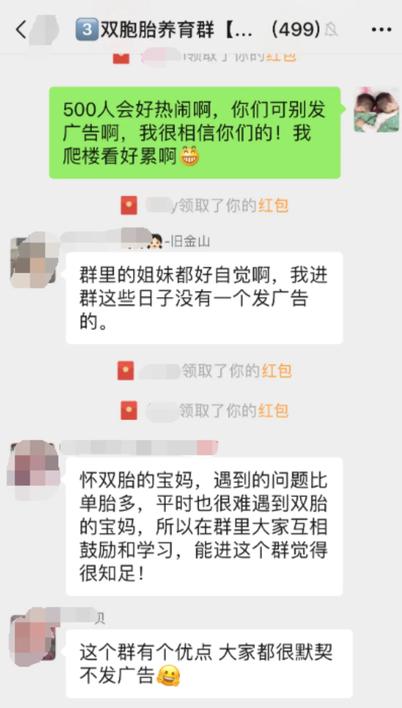
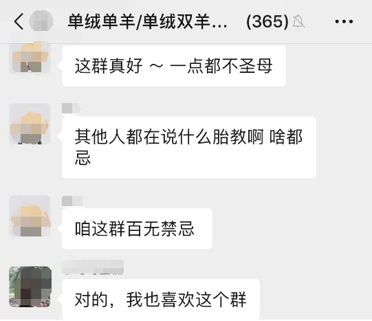
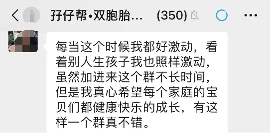
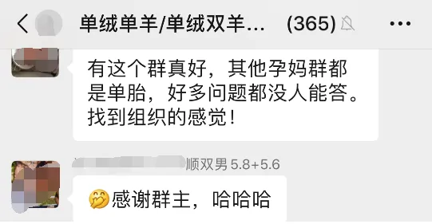
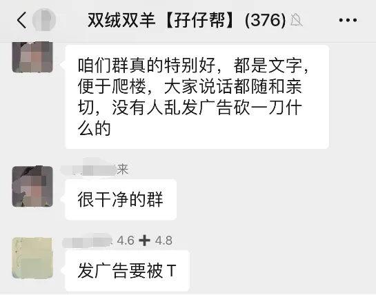
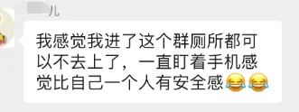
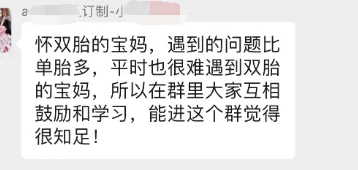
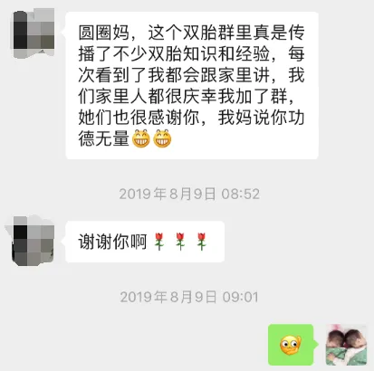
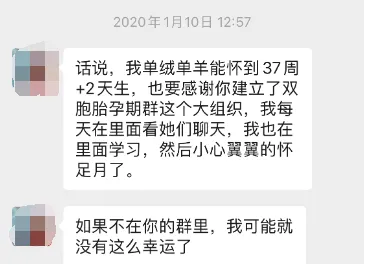
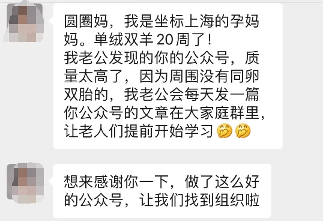
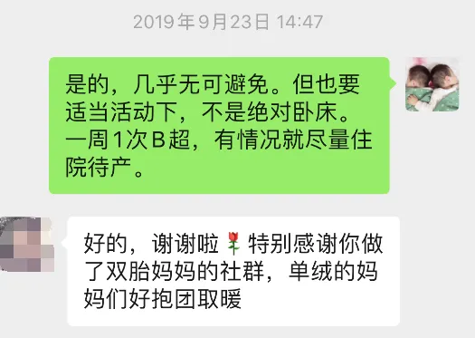
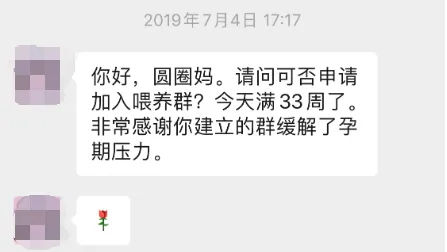
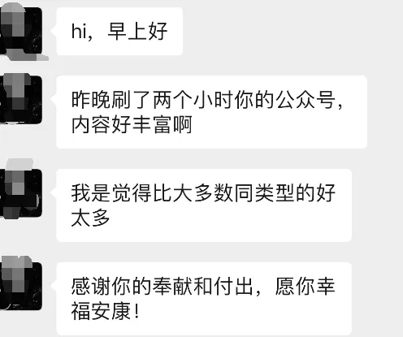
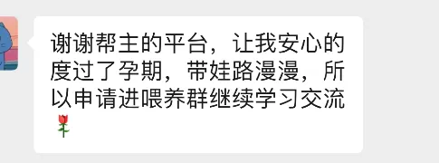
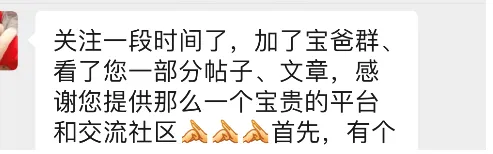
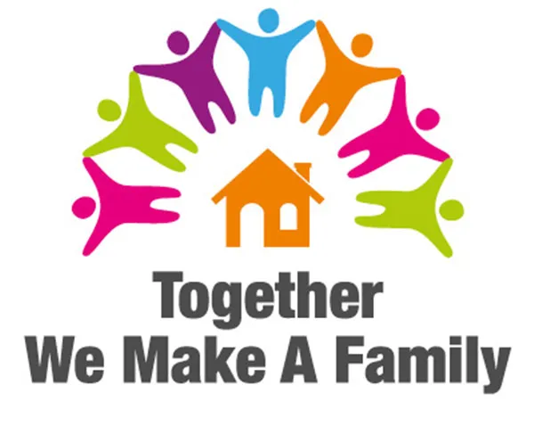
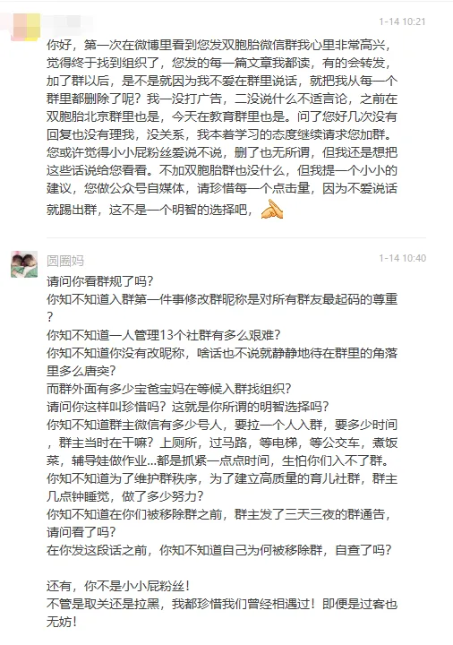
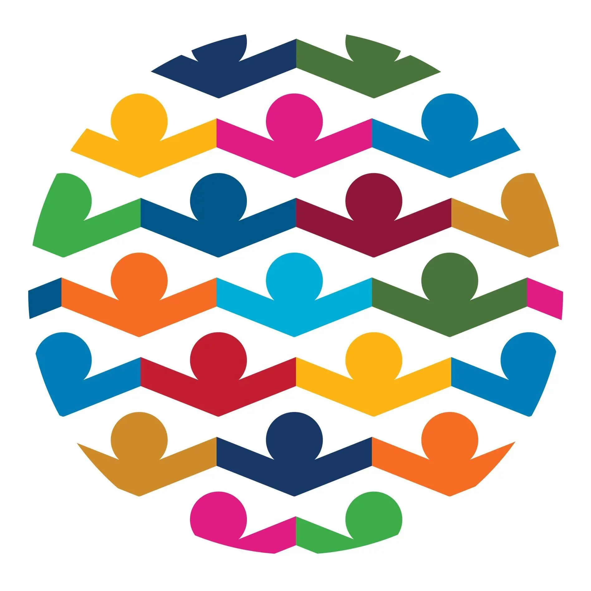